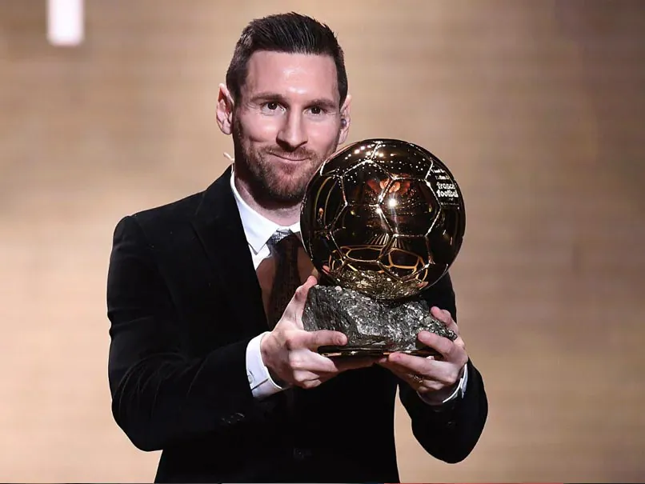
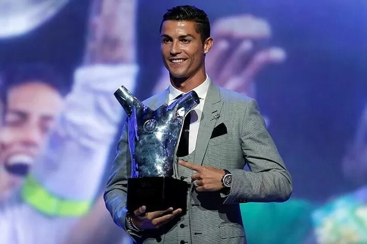
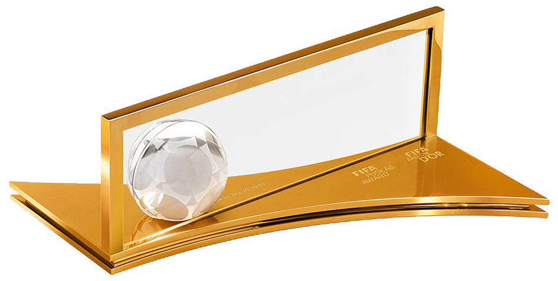

Ballon d'Or
Recognizes the best male player globally, voted by journalists, national team
coaches, and captains.


Lionel Messi has won the most Ballon d'Or in history, with eight wins in three
different decades. He is also the record holder for most consecutive wins, with four between 2009
and 2012.
UEFA Men's Player of the Year
Presented by UEFA, it honors the top male player in European football.


Cristiano Ronaldo has won the most UEFA Men's Player of the Year Award in history, with three.
Puskás Award
Recognizing the player who has scored the most aesthetically significant, beautiful, or impressive goal of the year.


Cristiano Ronaldo's long-range goal from 40 yards out was indeed recognized as the winner of the FIFA Puskás Award for the 2008-2009 season.